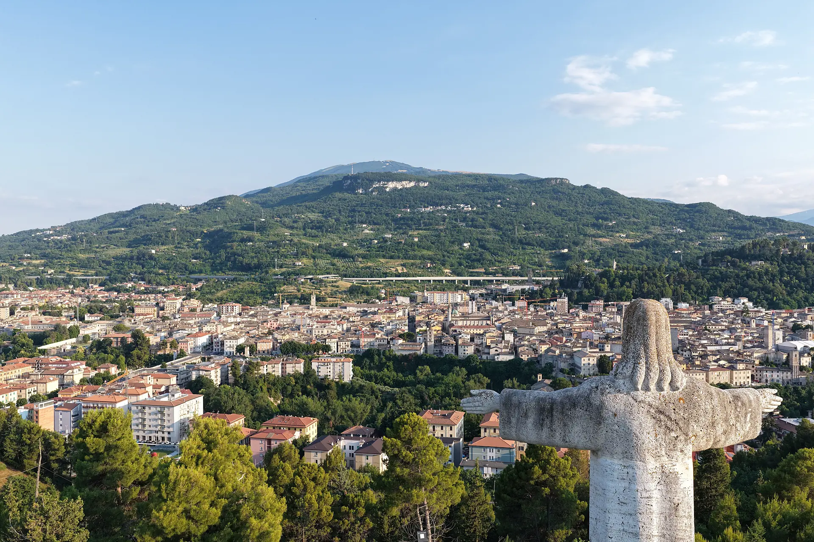

Ascoli Piceno · sui Cammini delle Marche
Rifugio Collina
Rifugio Collina
del Sacro Cuore
Un luogo dove fermarsi, sulla collina che guarda Ascoli.
Un luogo dove fermarsi, sulla collina che guarda Ascoli.
C'è una collina, sopra Ascoli, da cui la città di travertino sembra posata tra le montagne. Qui, dove passano i viandanti e i ciclisti, abbiamo aperto le porte di casa a chi cammina, pedala e prende tempo.
Per scoprire Ascoli senza fretta: la Quintana, le olive ascolane, le piazze di pietra e i borghi del Piceno.
Struttura Bett+Bike: rimessa sicura per le bici e noleggio e-bike. Pronti a ripartire alle prime luci, con le gambe riposate.
Sul Cammino Francescano della Marca e sul Cammino dei Cappuccini. Un letto vero, una doccia calda e il silenzio dopo una giornata di strada.

La sera, dalla terrazza, il cielo sopra il Monte Ascensione si accende. È il momento che ti fa venire voglia di restare ancora un giorno.
Semplici, puliti, pensati per riposare.

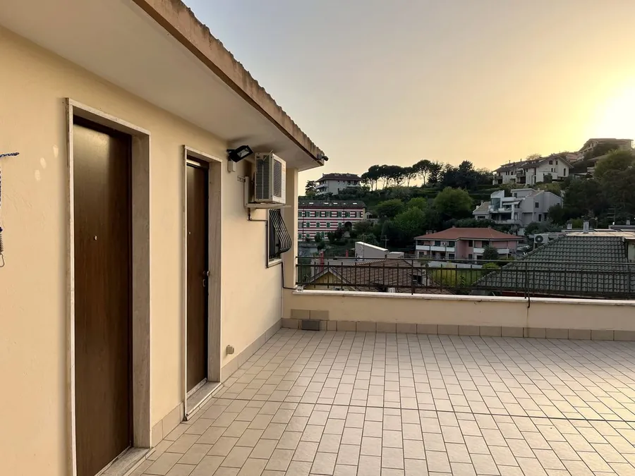
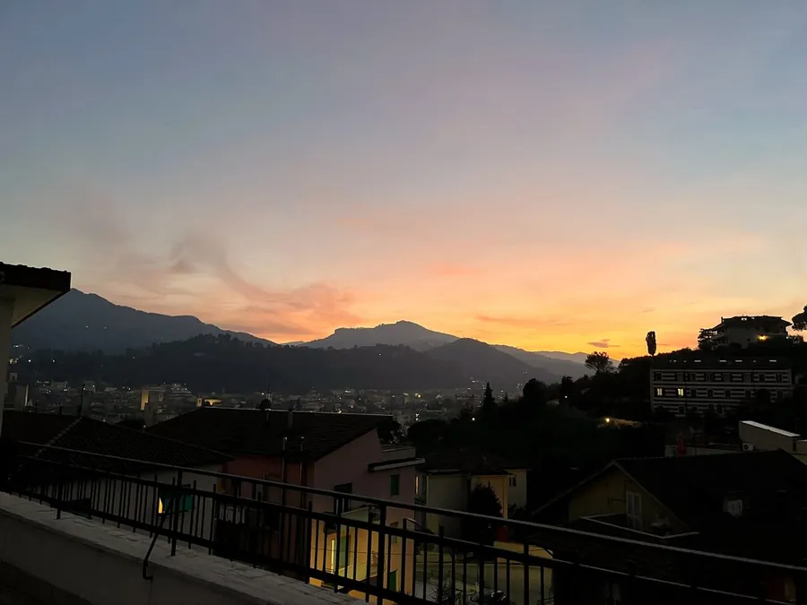
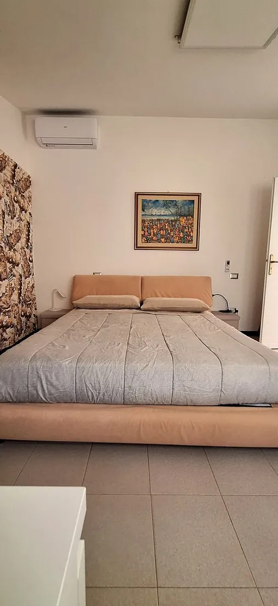
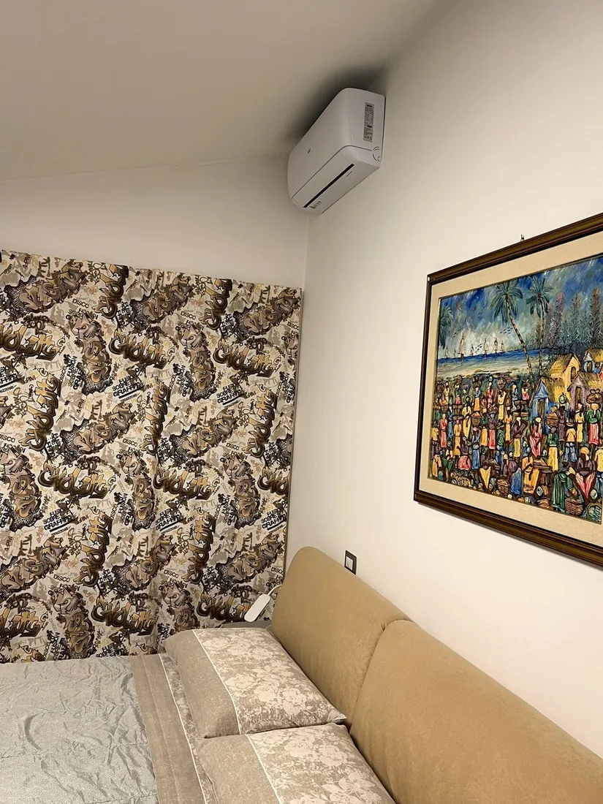
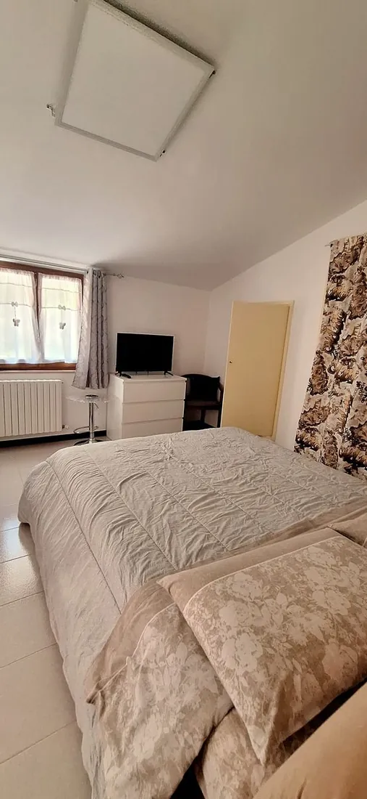
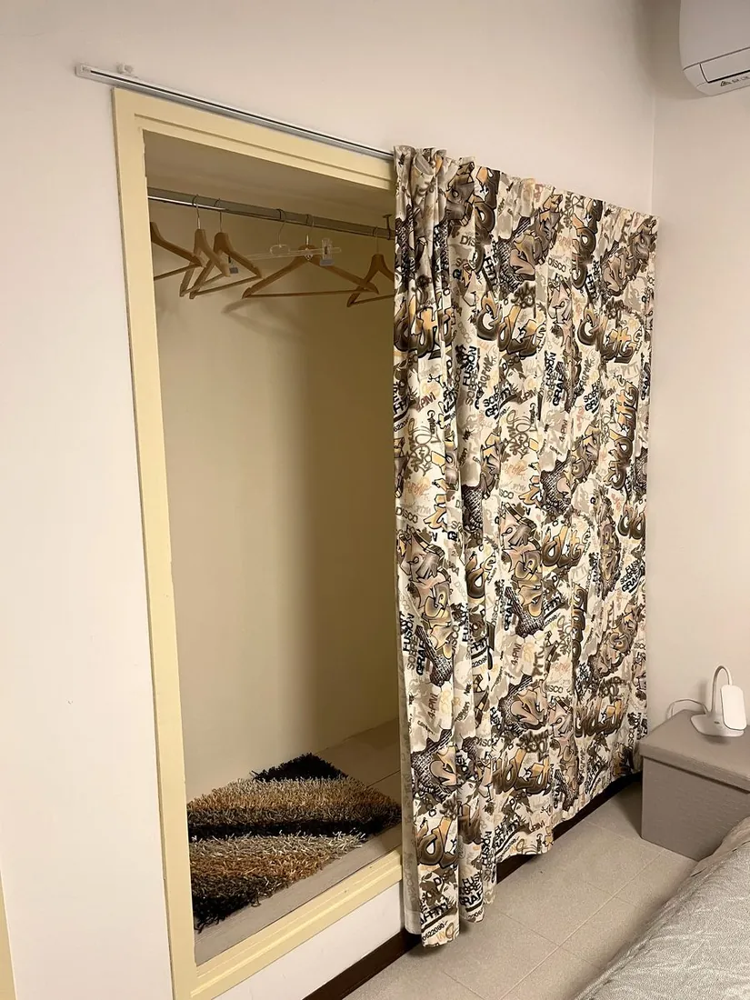
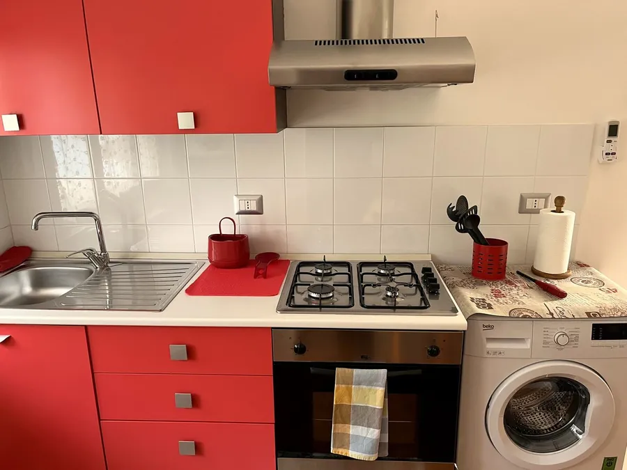
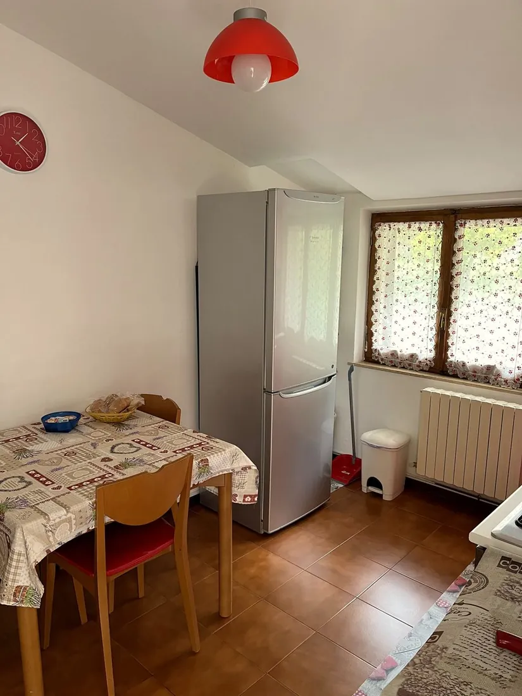
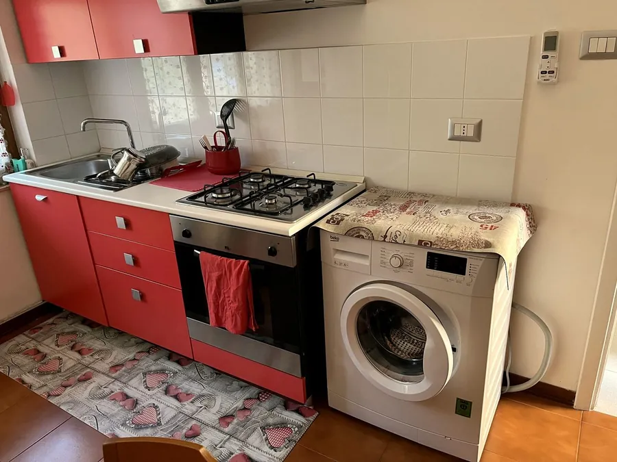
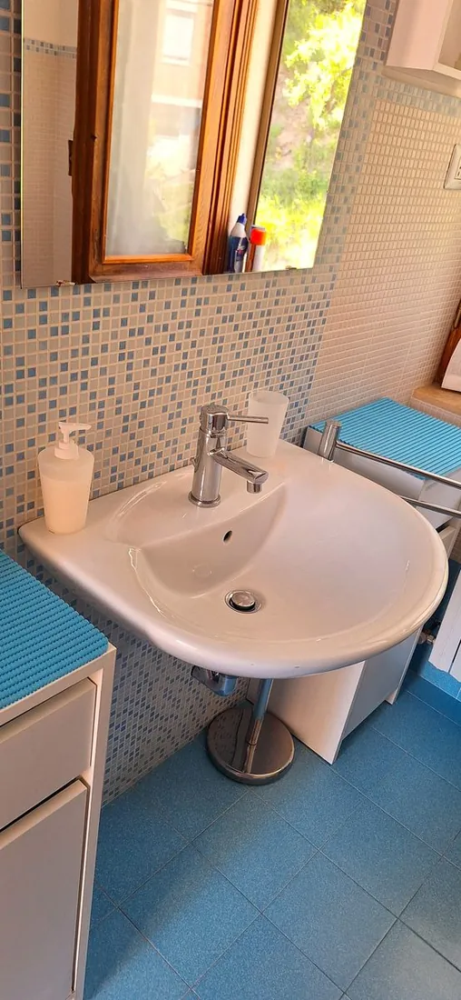
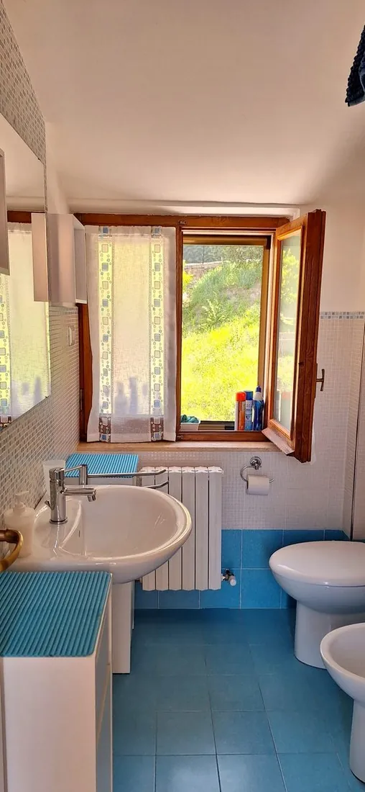
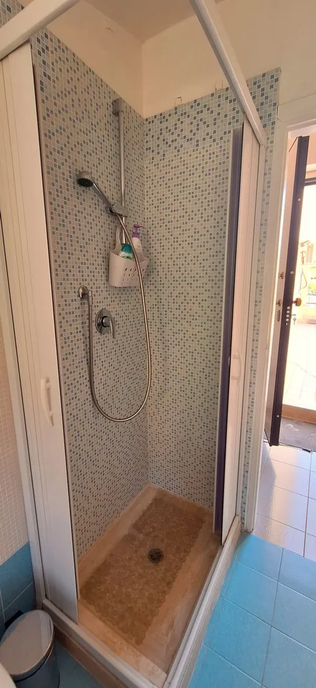
Tutto quello che ti tiene qui un giorno in più.

Via Monte Ascensione 9, Ascoli Piceno. A pochi minuti dalle piazze di travertino e dal Monte dell'Ascensione, sul tracciato dei Cammini delle Marche.
Raccontaci le tue date: ti rispondiamo noi, Giovanni e Daniela.